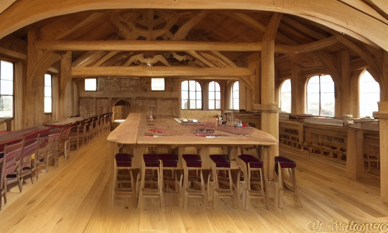

Laboratório isolado: comparação entre a apresentação atual e uma possível entrada visual da sede. Nenhuma alteração no jogo ou nos salvamentos.
A — Interface atual (referência)
🏰 Guilda dos Aventureiros
Contrate heróis, monte grupos e mande-os em missões. O tempo corre mesmo enquanto você observa — gerencie com sabedoria.
Ouro: 120Reputação: 0Salão nível: 1Pergaminhos: 0
Salão da GuildaMelhorias e capacidade do grupo
Taverna — RecrutarConheça novos aventureiros
Quadro de MissõesEscolha contratos e expedições
B — Conceito com ambiente gerado

🏰 Guilda dos Aventureiros
Uma sede para receber aventureiros, organizar contratos e preparar novas jornadas.
Salão nível 1 · 120 ouro · 0 reputaçãoOuro: 120Reputação: 0Salão nível: 1Pergaminhos: 0
Salão da GuildaMelhorias e capacidade do grupo
Taverna — RecrutarConheça novos aventureiros
Quadro de MissõesEscolha contratos e expedições
Critérios de avaliação: a sede comunica melhor a fantasia de administrar uma guilda? A imagem compete com os controles? Os pontos de interesse continuam claros em tela pequena? O estilo combina com a interface e os avatares?